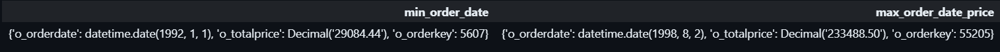

This is my note/workaround for the article “25 SQL tips to level up your data engineering skills” by Start Data Engineering, authored by Joseph Machado.
setup
Joseph provided a ready-to-go project regarding this advanced SQL transformation topics in this repo. We can either run it in the Github codespace or in our local machine with minimal setup.
I just simply create a SQL session with the TPC-H database along this session of this Quarto Notebook to practice.
We use the TPC-H database for demonstration:

#1 handy functions for data wrangling
#1.1 QUALIFY
We use QUALIFY to filter the output column of WINDOW function without creating more CTEs/Subqueries. It’s not available in many traditional/on-prem RDBMS (MySQL, Oracle, MSSQL, PostgreSQL) but available in mordern/cloud-based databases (Snowflake, BigQuery, Databricks, MS Fabric, Teradata).
#1.2 DISTINCT ON
Orginated from PostgreSQL, now support by some cloud-based like Snowflake but not in MySQL, SQL Server, Oracle, DISTINCT ON allows us to get 1 detailed row (first or last) for a particular partition.

#1.3 This can also be done with ROW_NUMBER() + QUALIFY:
#1.4 STRUCT_PACK()
STRUCT_PACK() is a function primarily associated with DuckDB:
- Creates a compact, binary representation of multiple values;
- Allows you to pack different data types into a single column;
- Useful for data compression and efficient storage.
Below picture depicts how struct works:

Show the code
WITH order_struct AS (
SELECT
o_orderkey,
STRUCT_PACK(o_orderdate, o_totalprice, o_orderkey) AS order_info
FROM orders
)
SELECT
MIN(order_info) AS min_order_date, -- get min of information from left to right
MAX(order_info) AS max_order_date_price -- get of information from left to right,
-- if there are many txn in that latest day, get the transaction with max price
FROM order_struct;
#1.5 BOOL_OR() & BOOL_AND()
BOOL_OR() & BOOL_AND() allows you to check a logical statement along all rows of a columns, supported in PostgreSQL, Snowflake, DuckDB, BigQuery, Databricks:
Show the code
SELECT
o_custkey,
BOOL_OR(cast(o_shippriority as boolean)) AS has_atleast_one_priority_order, -- check whether AT LEAST 1 order of that customer has Is Priority = True
BOOL_AND(cast(o_shippriority as boolean)) AS has_all_priority_order -- check whether ALL orders of that customer has Is Priority = True
FROM orders
GROUP BY o_custkey;
#1.6 EXCLUDE
When you want to select all (*) columns excet few ones:
#1.7 GROUP BY ALL saves the day
Repeating all the columns listed in the SELECT statement in GROUP BY is annoying, just use ALL:
#1.8 COUNT_IF()
Filter over rows in specific column:
#1.9 STRING_AGG()
Concatenate rows of string in a GROUP BY statement:
#1.10 Null handling with COALESCE()
Handling null value in a column with value from another column or default value:
Show the code
WITH fake_orders AS (
SELECT 1 AS o_orderkey, 100 AS o_totalprice, NULL AS discount
UNION ALL
SELECT 2 AS o_orderkey, 200 AS o_totalprice, 20 AS discount
UNION ALL
SELECT 3 AS o_orderkey, 300 AS o_totalprice, NULL AS discount
)
SELECT
o_orderkey,
o_totalprice,
discount,
COALESCE(discount, o_totalprice * 0.10) AS final_discount
FROM fake_orders;#1.11 GENERATE_SERIES()
This helps you generate a sequence/series of data over a range with an interval for data simulation or joining with other tables.

#1.12 UNNEST()
#2 SET operations
#3 macros
#4 jinja2
#5 metadata
#6 de-duplicate
#7 JOINs that you’ve never ever seen before
#8 use cases
resource
- Article by Start Data Engineering: https://www.startdataengineering.com/post/n-sql-tips-de/;
- Repo and workbook: …concepts/sql_tips/sql_tips.ipynb
Show the code
I added this R code chunk and somehow knitr engine successfully rendered SQL formatting block code.
Workaround: https://github.com/quarto-dev/quarto-cli/issues/2137